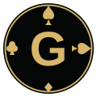

Leggibile
Ogni informazione ha un posto e una gerarchia.

GrandBridge APK 0.2.1Bridge · reinvented
Un tavolo digitale che conserva il carattere del gioco reale e ora cresce intorno al giocatore: robot spiegabile, account, amici, multiplayer, sfide, tornei e circoli.
La nostra idea
GrandBridge non semplifica il bridge fino a renderlo irriconoscibile. Porta sullo schermo la fisicità che i giocatori conoscono: il bidding box, i cartellini posati, il morto disposto per semi, la presa che resta visibile.
Ogni dettaglio serve a capire meglio cosa è successo e a rendere naturale la prossima decisione.
Quattro promesse
Ogni informazione ha un posto e una gerarchia.
Il tavolo accompagna il pensiero, senza interromperlo.
Gesti e tempi ricordano il bridge giocato davvero.
Il robot dichiara secondo regole che puoi comprendere.
Progettato intorno al gioco
L’interfaccia non corre davanti al giocatore. Gli dà spazio, mostra la gerarchia delle informazioni e lascia respirare ogni azione.
Carte e licite si selezionano, avanzano e si confermano. Il doppio tocco protegge dagli errori senza spezzare il ritmo.
Quinta Nobile naturale, comportamento rule-based e spiegazione della regola applicata. Il giocatore mantiene il controllo del sistema.
Licite e prese restano sul tavolo. Le animazioni accompagnano l’occhio invece di inseguire la velocità.
“Non un videogioco che usa le carte.
Un vero tavolo da bridge, digitale.”
Stato del progetto
GrandBridge 0.2.1 riunisce il tavolo di gioco, il robot spiegabile e la prima esperienza completa di account, amici e multiplayer autorevole.
Gioco e robotMano completa e Quinta Nobile spiegabile
AttivoAccount e multiplayerAccesso persistente, amici, tavoli e riconnessione
In provaSfide, tornei e circoliCompetizioni asincrone e realtime
In provaSicurezza ed ecosistemaReplay, integrità, badge e accessibilità
NuovoVersione 0.2.1
L’APK introduce accesso persistente, menu semplificato e collegamento cifrato al server realtime GrandBridge.
Email e password obbligatorie, sessione persistente, profilo, livello, dati FIGB dichiarati, amici, inviti e carte delle convenzioni.
Tavoli realtime, replay, sfide asincrone, daylong, tornei, circoli, PBN e strumenti del direttore.
Segnalazioni e appelli, eventi verificabili, classifiche, badge, lingua, contrasto, testo grande e animazioni ridotte.
Versione di collaudo. Gli accessi anonimi sono esclusi. Google, Apple, FIGB e pagamenti richiedono credenziali o accordi ufficiali e non sono presentati come servizi già attivi.
GrandBridge
La prima demo Android è pronta per essere provata su un telefono reale.
Scarica l’APK 0.2.1 ↓ Versione 0.2.1 · Android 6 o successivo · installazione manuale